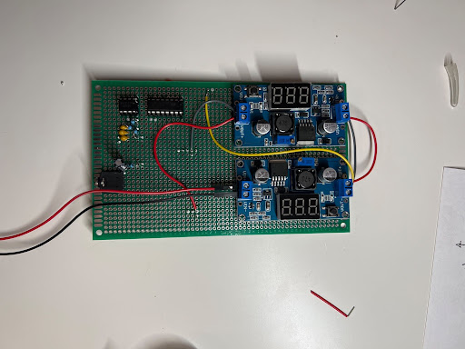
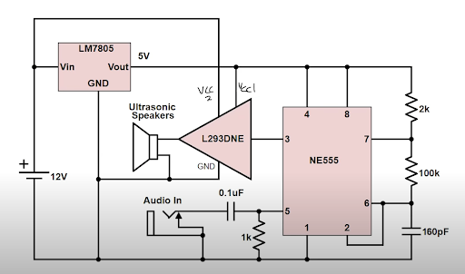
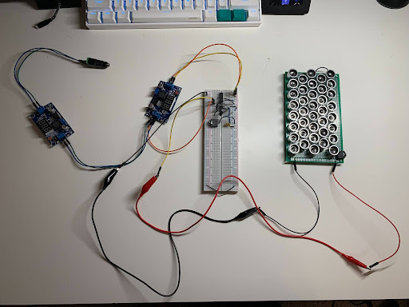
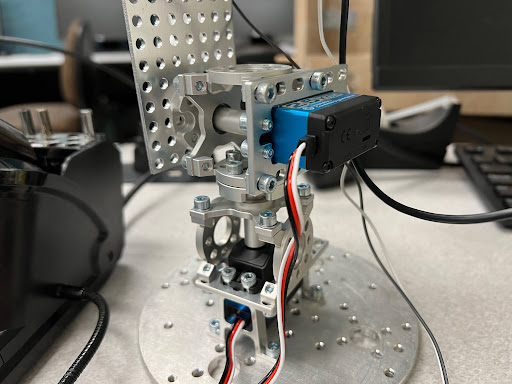

UPS | Ultrasonic Parametric Speaker
A functioning Ultrasonic Parametric speaker capable of transmitting music and other forms of audio
Project Details / Background
The goal of this project is to develop a parametric ultrasonic speaker array capable of producing directional audio through sound wave modulation (40kHz). The device enables sound to be heard only within a targeted area, making it ideal for applications in entertainment, commercial spaces, and museums. Additionally, the system integrates an AI-based face detection camera and robotic arm to help with user interaction.
To develop our ultrasonic directional speakers, we first needed to understand how sound frequency affects propagation. Audible frequencies, between 20Hz and 20kHz, tend to cover a wide area allowing people within this area to hear it. Although we can't hear ultrasound directly, air can demodulate high frequency modulated waves, making the original audio audible within a narrow beam. By modulating audio onto a 40kHz ultrasonic carrier, we can produce sound that is only heard in targeted areas. For AI-based face detection, we use I2C communication with the laptop's GPU to maximize FPS and processing speed.
Design | Demo

PCB design | Soldering

Schematic Diagram


Robotic arm which will be paired with an AI face detection camera